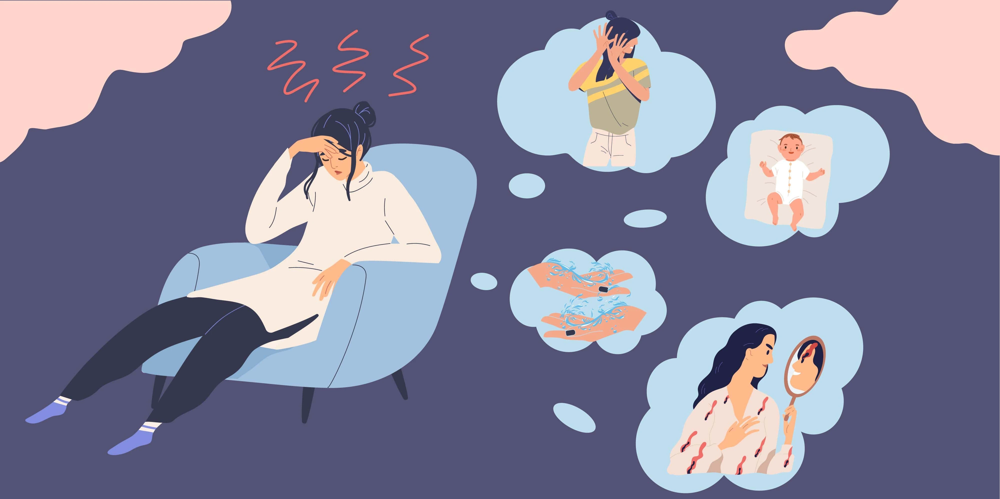
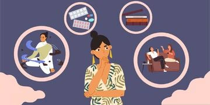

Treatment for OCD via telehealth with Epsychiatry
People with Obsessive-Compulsive Disorder, otherwise known as OCD, experience recurrent irrational and intrusive thoughts, which they can’t dismiss with reasoning or logical thinking. Intrusive thoughts seem to come out of nowhere and cause a great deal of anxiety and distress.
Most people get intrusive thoughts from time to time, for example, you may have the thought “my family member won’t make it home tonight” or “perhaps I should drive into this oncoming traffic’. The typical response to such thoughts is to identify them as a little odd, let them go and move on. You may feel strange after the experience, but the distress caused by these thoughts is fleeting.
In contrast, people with OCD experience intrusive thoughts much more frequently and the distress caused by them is significantly greater. To obtain a diagnosis of OCD, your symptoms must cause significant impairment in work or social life. To deal with the distressing thoughts, people with OCD often engage in repetitive rituals (called ‘compulsions’) to reduce their anxiety.

What are obsessions and compulsions and how can they present?
OCD includes obsessions and/or compulsions. Obsessions are repetitive, intrusive/unwanted thoughts, images or urges, which create significant distress and anxiety. People with OCD are often able to recognise that their obsessions don’t make any logical sense. Compulsions are repetitive behaviours or mental acts that occur in response to obsessions and aim to either
1) reduce the distress caused by the obsessions
2) prevent a dreaded event or outcome from occurring
Below, we have listed some of the common types of obsessions and compulsions.
Types of obsessions:
- Contamination (e.g. fears about germs, bodily fluids or environmental contamination, such as dirt or cleaning products)
- Loss of control (e.g. fears about losing control over one’s behaviour and impulsively acting out unwanted thoughts involved with harming self/others, blurting out swear words in public or stealing)
- Fear of harm (e.g. fears about being responsible for causing harm to others, for example, hitting a pedestrian whilst driving or causing a fire)
- Perfectionism (e.g. an excessive focus on things being done ‘right’, even or exact, needing to know things, and a fear of losing things or forgetting information)
- Forbidden sexual thoughts (e.g. impulses and thoughts around forbidden sexual acts or desires)
- Religious (e.g. thoughts of morality and fears of blasphemy or offending God)
- Other (e.g. the fear of contracting an illness or disease, superstitious ideas, or thoughts about one’s sexual orientation)
Types of compulsions:
- Washing and cleaning – excessively washing your hands, showering, avoiding contaminants or cleaning household items)
- Checking – repeatedly checking you locked the door, didn’t make a mistake, didn’t hurt someone or that something awful hasn’t happened)
- Repeating – repeatedly re-reading things, enacting a certain body movement or behaviour, or doing certain activities in ‘multiples’)
- Ordering – doing things a certain way or needing to arrange things in a particular order so they are ‘just right’)
- Mental compulsions – mentally reviewing events or praying to prevent harm, counting until things are ‘safe’ or ‘just right’, or cancelling ‘bad’ thoughts by replacing them with ‘good’ ones).
Obsessions and compulsions often fit together. For example, someone with contamination obsessions may try to neutralise or reduce their distress by engaging in washing/cleaning type compulsions; whilst someone with perfectionism obsessions might be more apt to engage in checking or ordering compulsions in an attempt to feel better.
How does OCD affect people?
OCD is a pervasive mental health condition. It can have a devastating impact in terms of lost earnings and diminished quality of life. The World Health Organisation (WHO) ranked OCD in the top 10 of the most disabling illnesses of any kind. This shows how serious this is. OCD symptoms often interfere with several aspects of a person’s life, including their relationships, work, study and ability to relax and take care of themselves.
People with OCD can spend much of their day carrying out compulsions. That is to say, they often don’t get other important things done. Some people may appear to be functioning well but are actually enduring a significant amount of distress. Both scenarios are exhausting and can lead people to become isolated, overwhelmed and depressed. To manage the distress, some people with OCD turn to drugs and alcohol.
The impact of OCD often goes beyond the individual to affect other people who are close to the sufferer. Clients with OCD often describe the impact of their symptoms on family members, friends and colleagues, which can perpetuate a sense of guilt and shame. Partners and children may feel embarrassed or frustrated by the symptoms and, in turn, can withdraw, become critical or even unknowingly encourage the OCD symptoms.
At Epsychiatry, we recognise the potential benefit of involving significant others in your care and, therefore, offer family consultations when indicated.
What causes OCD?
There is no clear cause for OCD but research suggests its onset is probably related to a combination of several different factors. OCD tends to run in families, which suggests there is a genetic component that might increase your risk for the disorder. Personality may also play a role, with people who are neat, perfectionistic and who have high attention to detail being at greater risk.
Past experiences and stressful events can interact with other factors in at-risk people to produce OCD. For example, someone with a history of abuse might use obsessive or compulsive behaviour to manage their traumatic thoughts. Starting a new job or becoming pregnant may trigger obsessive thoughts and compulsive behaviour. We can also learn this behaviour, such as when a child mimics or copies an adult. Or when a person learns over time that a particular action temporarily reduces their distress.
In sum, the cause of OCD isn’t fully understood but it is thought that a combination of genetic, biological, psychological and environmental factors play a role. Your risk for developing OCD may be increased by a family history of OCD, stressful life events, and the presence of other mental health disorders.
Why is it important to have a support network?
People with OCD can become increasingly socially isolated as a result of their symptoms. The symptoms of OCD can result in significant shame and embarrassment, leading people to withdraw and suffer in silence. People with OCD report they fear that others won’t understand their obsessions/compulsions. Or sometimes that they will negatively judge them for it. Keeping quiet about your symptoms can result in you feeling alone, increase stigma and prolong access to treatment and recovery.
In contrast, seeking support and sharing your experience of OCD can be empowering. Talking about obsessive thoughts and compulsions with others can make your symptoms feel less intense. If supportive others are aware of your struggles, they can step in and provide help when things feel overwhelming. Having a support network can also combat things like loneliness and isolation, which work to maintain your illness.
It is important you select the right people to talk with about your OCD. Ideally, you should select a person/people who you trust and who have been supportive of you in the past. It may be your family doctor, family member or a close friend. Before deciding who to confide in, think about how they would respond. Most importantly, their understanding of mental health and how well they know you. Take your time when sharing, you don’t need to disclose everything at once.
Having a support network is a ‘protective factor’ for mental health. It reduces your risk of negative health outcomes, promotes recovery and reduces the likelihood of relapse.

Why should professional mental health services be sought for OCD?
Whilst OCD symptoms generally fluctuate over time, this condition is chronic and unlikely to go away on its own. People with OCD can get better with the right treatment. OCD treatment often includes psychological therapy and, in some cases, medications.
There are several evidence-based treatments for OCD. Cognitive Behaviour Therapy (CBT) is an important psychological treatment for OCD. This involves a specific technique called Exposure and Response Prevention (ERP), which targets the compulsive behaviours that maintain this disorder. Other anxiety management and cognitive strategies are also used during treatment for OCD.
There is also a role for medication in the treatment of OCD. The best evidence is for a class of Selective Serotonin Reuptake Inhibitors (SSRI’s). SSRI’s can help by reducing intrusive thoughts and compulsions. They can also help by treating any related depressive symptoms that may be adding to your difficulties.
OCD is best treated with a multi-disciplinary approach; that is, a psychiatrist and psychologist working together with your GP to provide holistic and integrated care. Having a diagnosis of OCD may mean you are also eligible for additional supports through programs like the National Disability Insurance Scheme (NDIS). These additional supports can make the challenges of everyday life easier to overcome.